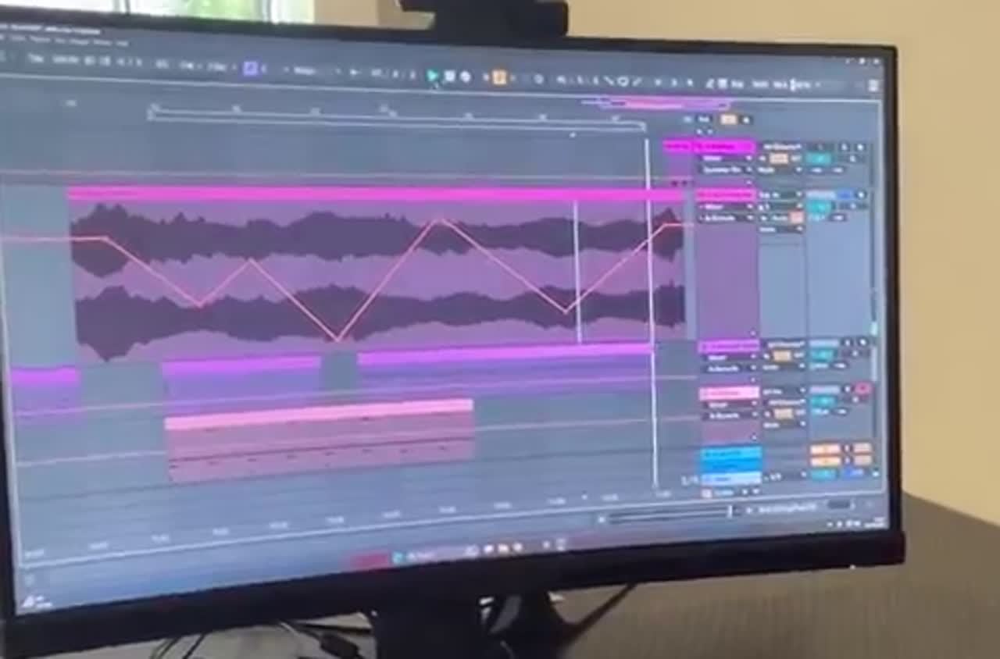

3D and music
Automation in Ableton
Drawing parameter automation to shape volume, filters and effects over time, giving a track movement and dynamics.
Ableton Live
How it works
Automation turns a static loop into music that evolves: filter sweeps into a drop, volume fades between sections, effect sends that swell and pull back. The screenshot shows the workflow of drawing and editing automation curves directly onto clips and tracks in arrangement view.
For game design the same thinking applies to adaptive game audio: parameters changing in response to what the player does.
In Ableton
